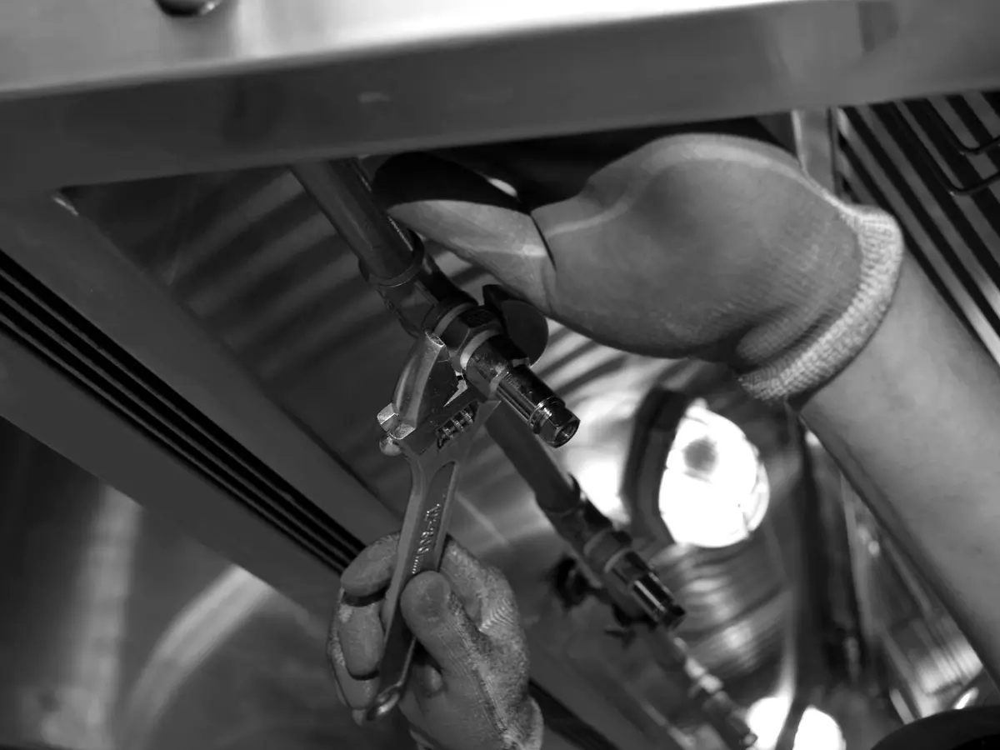

Furnace, boiler and heat pump service
No heat, uneven heat or a system that is on its last winter. We work on forced air, hot water and steam.

Heating
What we service
- Gas furnaces
- Hot water boilers
- Steam boilers and radiators
- Heat pumps
- Thermostats and zone controls
- Circulator pumps and zone valves
- Igniters and flame sensors
- Blower motors
- Ductwork repair
- Radiator valves and vents
- Fall tune-ups and safety checks
- System replacement
Know what you're looking at
Signs it's time to call
- Short cycling
- The system starts, runs a minute or two and shuts off. Usual causes are a clogged filter, a dirty flame sensor or an overheating heat exchanger.
- Banging radiators
- On a steam system, water is trapped where it should drain back. A radiator that has settled out of pitch or a half-closed valve is the usual cause.
- One room stays cold
- On hot water heat, air in the radiator or a stuck zone valve. On forced air, a closed damper or a leaking duct run.
- A carbon monoxide alarm
- Leave the house and call 911. Do not run the heat again until the system has been checked.
We work on radiators
Plenty of homes on the Main Line and in Delaware County still heat with hot water or steam, and not every company still services them. A boiler that is cared for can run for decades. We repair them, and we tell you plainly when replacing makes more sense.
How a service call works
Three steps, no surprises
Book or call
Pick a time online or call us. You get a confirmation by text or email.
We find the cause
The tech looks at the whole problem, explains it in plain words and gives you a price.
You approve, we fix it
Work starts when you say go. We test it, show you what we did and clean up.
Common questions
Heating questions
Should I repair or replace my furnace?
A gas furnace usually lasts fifteen to twenty years. If yours is past fifteen and the repair costs a large share of a new unit, replacing is usually the better use of the money. Younger than that, repair.
When should I get a tune-up?
Early fall, before the first cold snap. Problems found in October are cheaper and easier than the same problems found on the coldest night of January.
Do heat pumps work in Pennsylvania winters?
Current cold-climate heat pumps heat well through winters here. Many homeowners keep their furnace or boiler as backup for the coldest days.
What should I check before I call?
Make sure the thermostat is set to heat and has fresh batteries, the furnace switch and breaker are on, and the filter is not clogged. If all of that is right, call.
Schedule service
Heat acting up?
Book a visit online or call. If you have no heat at all, call.